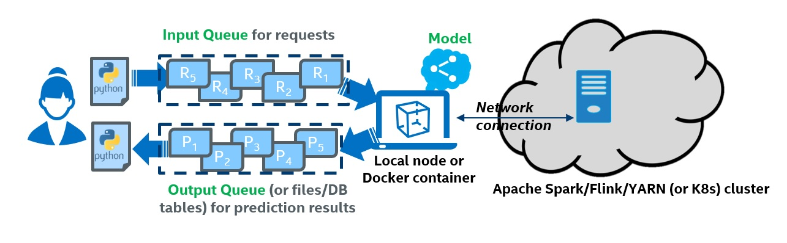

Cluster Serving User Guide¶
BigDL Cluster Serving is a lightweight distributed, real-time serving solution that supports a wide range of deep learning models (such as TensorFlow, PyTorch, Caffe, BigDL and OpenVINO models). It provides a simple pub/sub API, so that the users can easily send their inference requests to the input queue (using a simple Python API); Cluster Serving will then automatically manage the scale-out and real-time model inference across a large cluster (using distributed streaming frameworks such as Apache Spark Streaming, Apache Flink, etc.)
The overall architecture of BigDL Cluster Serving solution is illustrated as below:
overview
Workflow Overview¶
The figure below illustrates the simple 3-step “Prepare-Launch-Inference” workflow for Cluster Serving.
 steps
steps
1. Install and prepare Cluster Serving environment on a local node:¶
Copy a previously trained model to the local node; currently TensorFlow, PyTorch, Caffe, BigDL and OpenVINO models are supported.
Install BigDL Cluster Serving on the local node (e.g., using a single pip install command)
Configure Cluster Server on the local node, including the file path to the trained model and the address of the cluster (such as Apache Hadoop YARN cluster, K8s cluster, etc.). Please note that you only need to deploy the Cluster Serving solution on a single local node, and NO modifications are needed for the (YARN or K8s) cluster.
2. Launch the Cluster Serving service¶
You can launch the Cluster Serving service by running the startup script on the local node. Under the hood, Cluster Serving will automatically deploy the trained model and serve the model inference requests across the cluster in a distributed fashion. You may monitor its runtime status (such as inference throughput) using TensorBoard.
3. Distributed, real-time (streaming) inference¶
Cluster Serving provides a simple pub/sub API to the users, so that you can easily send the inference requests to an input queue (currently Redis Streams is used) using a simple Python API.
Cluster Serving will then read the requests from the Redis stream, run the distributed real-time inference across the cluster (using Flink), and return the results back through Redis. As a result, you may get the inference results again using a simple Python API.
Next Steps¶
Deploy Cluster Serving¶
To deploy Cluster Serving, follow steps below
Examples¶
You could find some end-to-end examples about how to build a serving application from scratch or how to migrate an existed local application to serving.
Trouble Shooting¶
Some frequently asked questions are at FAQ
Contribute Guide¶
For contributors, check Contribute Guide